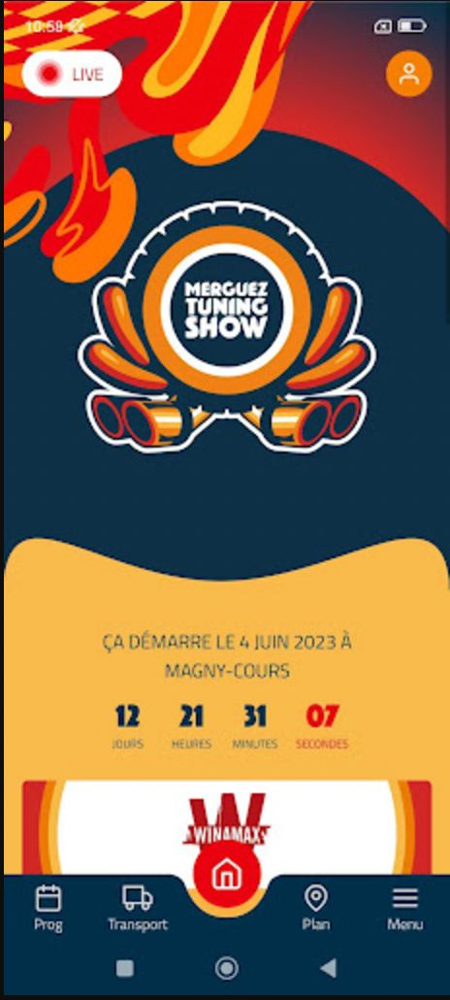
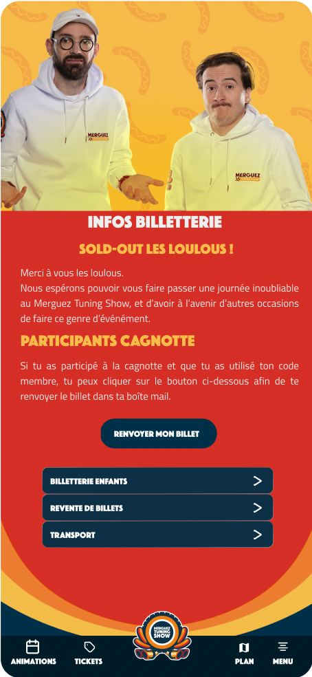
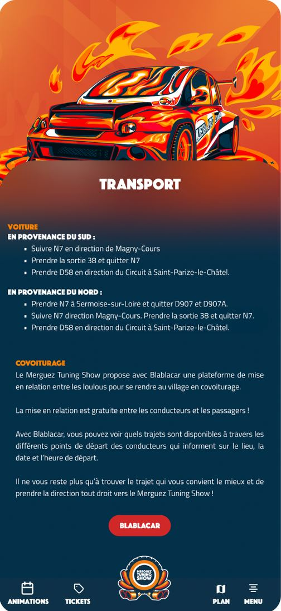
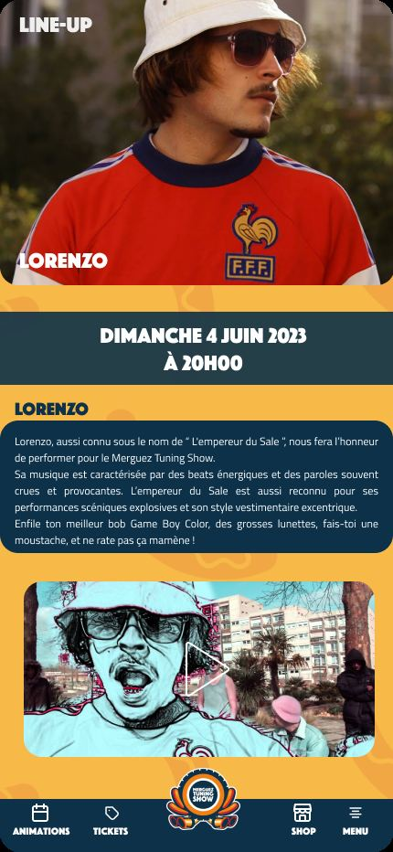

Project 01Merguez Tuning Show
Site web · Application mobile · 2023J'ai conçu et supervisé la création du site web officiel du Merguez Tuning Show, en veillant à offrir une expérience utilisateur optimale et adaptée à l'envergure de l'événement.
J'ai également piloté le développement de l'application mobile dédiée, en collaboration avec un prestataire, pour proposer des fonctionnalités interactives et améliorer l'engagement des participants.
01Site web officiel
02Application mobile
03Pilotage prestataire



